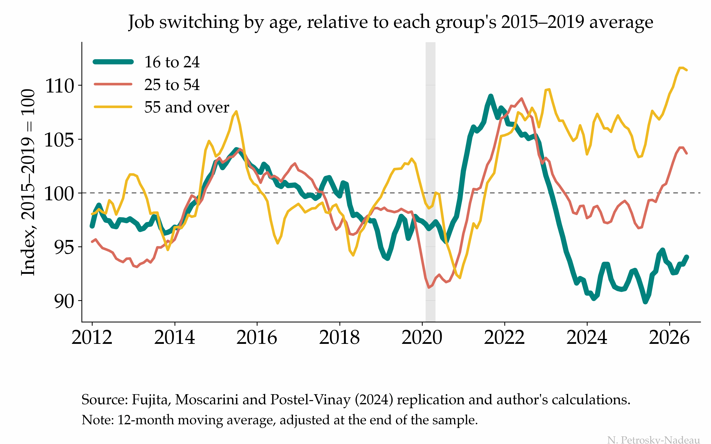

Job switching is where much early-career wage growth begins. The strong labor market of 2022 lifted it for every age group at once; the recovery since 2024 has left the young behind.

Each line is an age group’s rate of moving straight from one employer to another, measured against its own 2015–2019 average, because the levels are not comparable across groups: 16-to-24-year-olds switch employers about three times as often as workers over 55. At the 2022 peak the three ran within about three index points of each other; they have pulled apart since. The over-55s (gold) are about ten percent above their pre-pandemic norm and prime-age workers (salmon) have come back around it, while the young (teal), who bottomed ten percent below in early 2024, are still six percent short.
The series are 12-month moving averages, and the most recent stretch is computed on a shortened window, so those months can revise as the survey adds data. The downloadable file flags them.